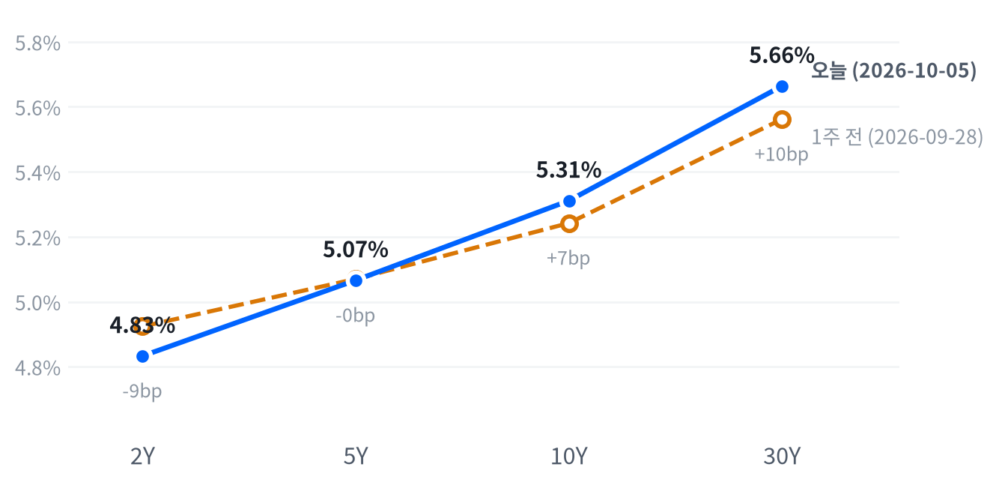

월요일 뉴욕 증시에서는 엔비디아와 마이크로소프트가 이끈 기술주 강세로 나스닥이 사상 최고 종가를 새로 썼다. 같은 날 10년물과 30년물 금리는 장중 2002년 이후 최고까지 올랐지만 2년물은 거의 움직이지 않았다.
장기물 상승은 연준 경로보다 기간프리미엄 쪽 재료로 판단한다. 10월 7~8일 10년물·30년물 입찰과 FOMC 의사록이 이 판단을 시험한다.
장기 국채금리가 20여 년 만의 높이로 올라섰는데 주식은 기록을 경신했다. CNBC는 10년물 금리가 장중 5.349%까지 올라 2002년 이후 최고를 찍었다고 전했다. 같은 날 나스닥은 1.05% 올라 사상 최고 종가로 끝났다. 엔비디아와 마이크로소프트가 상승을 이끌었다. 엔비디아도 5월 이후 처음 사상 최고 종가를 썼다.
장기물만 오른 날이라 정책 경로보다 프리미엄이 움직였다고 본다. 2년물은 0.8bp 오르는 데 그쳤고, 유가는 G7 비축유 방출로 2% 넘게 내렸으며 기대인플레는 그대로였다. 정책 기대는 이미 자리를 잡았다. CME FedWatch를 인용한 보도들은 12월 인상 확률을 출처마다 크게 다르게 집계했지만 10월 인상이 사실상 빠지고 12월 인상이 남았다는 방향은 같았다. 다른 설명도 남는다. ISM 서비스 가격지수가 2022년 7월 이후 최고로 올라 기대인플레 지표에 잡히지 않는 인플레 위험 프리미엄이 붙었을 수 있고, 입찰 주간을 앞두고 장기물을 미리 덜어 낸 매도였을 수도 있다. 오늘 종가로는 셋을 구분하지 못한다.
새 거래 아이디어는 내지 않고 커브는 이번 주 입찰 결과를 본 뒤 판단한다. 프리미엄 해석은 커브 스티프닝 쪽과 맞지만, 2s10s는 한 주 사이 16.0bp 벌어져 상당 부분이 이미 가격에 들어갔을 수 있다. 표현 수단은 국채 선물 커브 거래다. 캐리·롤과 듀레이션 중립 비율 자료가 없어 비용과 손익 구조를 평가하지 못한다. 판단 시한은 10월 9일 종가까지다. 주식은 지수가 높은 자리에 섰지만 상승이 종목 재료에 기대고 있어(모건스탠리의 엔비디아 최선호주 복귀, 슈나이더의 PTC 인수) 지수 방향에 새 판단을 걸 근거가 약하다.
10월 7일 10년물, 8일 30년물 입찰이 무난하게 소화되고 의사록이 매파적으로 읽히는데도 30년물이 2년물보다 크게 오르면 프리미엄보다 정책·인플레 경로에 무게를 옮긴다. 반대로 약한 지표에 2년물과 30년물이 함께 내리고 5s30s가 53.1bp 아래로 좁혀지면 프리미엄 해석을 거둔다.
| 지수 | 종가 | 등락률 | 기준일 |
|---|---|---|---|
| 닛케이225 | 68,309.46 | -0.94% | 10월 2일 |
| 항셍 | 23,972.29 | -2.60% | 10월 2일 |
| 상해종합 | 3,842.20 | +0.31% | 9월 30일 |
| DAX | 25,231.20 | +1.17% | 10월 2일 |
| FTSE100 | 10,462.00 | +0.32% | 10월 2일 |
| 유로스톡스50 | 6,238.50 | +1.02% | 10월 2일 |
| VIX | 15.52 | +1.37% | 10월 5일 |
아시아·유럽 지수는 확보된 가장 최근 마감 기준이다. 상해종합은 9월 30일, 나머지는 10월 2일 금요일 마감이다.
아시아는 미국과 엇갈렸다. 10월 2일 마감에서 닛케이가 0.94%, 항셍이 2.60% 내렸고 상해종합은 9월 30일 마감에서 0.31% 올라 지역 안에서도 갈렸다. 유럽은 DAX와 유로스톡스50이 1% 넘게 오르며 미국의 상승과 같은 방향으로 움직였다. VIX는 15.52로 소폭 올랐지만 지난 두 해 가운데 낮은 쪽 21% 안에 머물렀다.
야간 선물은 좁은 폭에서 오르내렸다. S&P 선물(ES)은 전날 저녁 21:30(ET) 7,793에서 고점을 찍었다. 새벽까지 밀려 저점은 7,760이었다. 하루 폭은 0.42%에 그쳤고 나스닥100 선물(NQ)도 0.85% 폭 안에 있었다. investingLive는 ISM 서비스업 발표를 앞두고 달러가 강해지고 주가 선물이 밀렸다고 전했다. 현물은 S&P +0.11%, 나스닥 +0.14%로 보합 출발했다.
세 지수 모두 하루 범위의 중간쯤에서 끝났다. 개장 직후에 저점을 찍고 오후 내내 올랐다가 마감 전 한 시간 동안 상승분 일부를 내줬다.
고점권·저점권 경계는 최근 2,253거래일의 일간 종가 위치 이력으로 다시 잰 기준이다.
장기 금리와 대형 기술주가 하루를 나눠 가졌다. TheStreet는 10:00(ET) ISM 서비스업 가격지수가 예상보다 높게 나온 뒤 금리가 올랐다고 전했지만 주가는 그 뒤에도 오후까지 올랐다. 금리의 장중 경로 자료가 없어 두 움직임의 시각을 맞추지는 못한다. 지수 안에서는 엔비디아와 마이크로소프트가 상승을 끌었고, 슈나이더 일렉트릭이 인수에 합의한 PTC가 3분의 1 가까이 뛰었다. 장 마감 뒤 거래에서 눈에 띄는 움직임을 확인할 자료는 없다.
주식과 금리는 최근 60거래일 동안 느슨하게 반대로 움직여 왔다(상관계수 -0.394, 직전 60거래일 -0.553).
| 지수 | 종가 | 등락률 |
|---|---|---|
| 나스닥 | 27,477.31 | +1.05% |
| S&P500 성장주 | 145.24 | +0.92% |
| S&P500 | 7,773.95 | +0.66% |
| 러셀2000 | 2,847.14 | +0.50% |
| S&P500 가치주 | 230.51 | +0.39% |
| 다우존스 | 51,267.90 | +0.18% |
| 섹터 | 등락률 |
|---|---|
| 소재 | +1.31% |
| 커뮤니케이션서비스 | +1.17% |
| 에너지 | +1.00% |
| 금융 | +0.73% |
| 헬스케어 | +0.72% |
| 필수소비재 | +0.63% |
| 기술 | +0.56% |
| 유틸리티 | +0.35% |
| 경기소비재 | +0.35% |
| 산업재 | +0.09% |
| 부동산 | -0.34% |
나스닥은 27,477로 올라 최근 2년(504거래일)을 통틀어 가장 높은 자리에서 끝났다. S&P500은 7,774로 같은 기간 이보다 높았던 날이 이틀뿐이고, CNBC는 8월 13일 기록 종가에 0.3% 못 미쳤다고 전했다. 오늘 움직임은 평소 하루 폭과 비슷한 보통 크기였다. 지수의 높은 수준은 여전히 기술 한 업종이 만든다. 지난 한 주 기술 섹터가 3.29% 오르는 동안 헬스케어·부동산·필수소비재·금융은 내렸다.
S&P500은 7,731에 열어 개장 직후에 저점을 찍은 뒤 오후 내내 올랐다. 15:00(ET) 7,794로 고점을 찍고 마감 전 일부를 내줬지만, 금리가 장중 20여 년 만의 높이로 오른 날에도 시가 아래로 크게 내려가지 않았다. 나스닥은 고점이 시가보다 1.16% 높아 세 지수 가운데 가장 가파르게 올랐다. 러셀2000은 개장 직후 시가보다 0.44% 밀린 뒤 따라붙었다. 아침의 흔들림이 소형주에서 가장 컸다. 엔비디아는 마감 직전까지 고점을 높였다.
지수 상승은 두 업종이 절반가량을 만들었다. S&P500 상승 0.66% 가운데 기술이 +0.19%포인트, 커뮤니케이션서비스가 +0.15%포인트를 보탰다. 금융(+0.08%포인트)과 헬스케어(+0.07%포인트)가 뒤를 이었고 산업재는 거의 기여하지 않았다. 섹터로 설명되지 않는 부분은 +0.06%포인트다. 커뮤니케이션서비스 몫에는 메타가 있다.
섹터 기여는 최근 252거래일 회귀로 추정했고 설명력은 0.976이다. 소재·부동산은 추정에서 식별되지 않아 뺐다.
이 상승은 금리 부담을 이겨 낸 것이 아니라 종목 재료가 덮은 것으로 본다. 주식과 금리는 최근 60거래일 느슨하게 반대로 움직여 왔는데, 오늘은 장기 금리가 오른 날 성장주가 가치주보다 두 배 넘게 올랐다(성장주 +0.92%, 가치주 +0.39%). 금리에 민감한 업종 가운데 내린 것도 부동산 하나였다. CNBC는 엔비디아·마이크로소프트·메타 세 종목이 금리 압박 속에서 지수를 기록으로 밀어 올렸다고 전했다. 마감이 하루 범위 중간이라 이 힘이 다음 세션까지 이어질지는 오늘 자료로 가늠하기 어렵다.
| 만기 | 종가 | 전일比(bp) | 1주 전 | 주간 변화(bp) |
|---|---|---|---|---|
| 2Y | 4.833% | +0.8 | 4.924% | -9.1 |
| 5Y | 5.066% | +1.1 | 5.070% | -0.4 |
| 10Y | 5.311% | +3.4 | 5.242% | +6.9 |
| 30Y | 5.664% | +3.4 | 5.562% | +10.2 |
네이버 국채 종가 기준(2026-10-05, 전 만기 동일 기준일). 1주 전은 9월 28일.

1주 전(9월 28일)보다 2년물은 내리고 10년물·30년물은 올라 커브가 가팔라졌다. 2년물 하락과 장기물 상승이 함께 만든 스티프닝이다.
10년물은 5.311%, 30년물은 5.664%로 끝나 둘 다 최근 2년(504거래일)을 통틀어 가장 높은 자리에 섰다. CNBC에 따르면 장중에는 30년물이 5.703%까지 올라 2002년 5월 말 이후 최고를 찍었고, 두 만기 모두 마감까지 장중 상승분의 절반가량을 내줬다. 하루 움직임 자체는 평소 하루 폭 안쪽이었다. 이 높이는 한 주에 걸쳐 쌓였다. 10년물은 9월 28일보다 6.9bp, 30년물은 10.2bp 올랐다.
하루 동안은 장기물이 움직임의 대부분을 만들었다. 2년물은 0.8bp, 5년물은 1.1bp 오르는 데 그쳤고 10년물과 30년물은 3.4bp씩 올랐다. 2s10s는 47.8bp로 2.6bp, 5년물과 30년물의 금리차는 59.8bp로 2.3bp 벌어져 하루 기준으로도 베어 스티프닝이다. 한 주 기준으로 보면 2s10s가 9월 28일 31.8bp에서 크게 벌어졌다. 2년물이 내리는 동안 장기물이 오른 결과다.
장기물을 밀어 올린 재료는 정책 경로가 아니었다고 판단한다. 10:00(ET)에 나온 ISM 9월 서비스업 지수는 54.9로 8월(55.4)보다 낮았지만, 가격지수가 74.0으로 예상(72.9)을 웃돌며 2022년 7월 이후 최고를 찍었다. 보도에 나온 세부 지표를 보면 사업활동은 56.5로 5.2포인트 내렸고, 고용은 50.1로 석 달 만에 확장으로 돌아섰다. 정책 경로를 다시 매겼다면 2년물이 먼저 움직였어야 하는데 앞쪽 금리는 거의 반응하지 않았다.
기대인플레로도 설명하지 못한다. 10년 기대인플레는 오늘 2.36%로 그대로였고 5년은 1bp 내렸다. 유가가 2% 넘게 내린 날이라 원자재발 물가 경로도 맞지 않는다. 남는 쪽은 실질금리와 기간프리미엄인데 둘 다 오늘 값이 아직 없다. 같은 날짜로 맞춘 최신 분해는 10월 2일 기준이고, 그날 10년물 4bp 상승은 전부 실질금리 몫이었다. 10년 기간프리미엄 추정치는 9월 25일 1.02%포인트가 최신이다. 실질금리가 갱신되면 오늘 상승의 내역이 갈린다.
재정과 유럽 쪽 재료가 함께 거론됐다. CNBC는 국채금리 상승이 아직 재정 위기 신호는 아니라는 TD증권의 분석을 전했다. 국채 평균 이자율이 명목 성장률보다 낮다는 근거였다. Guardian은 프랑스와 독일의 국채 금리차가 2012년 이후 최대로 벌어졌다고 보도했다. 신용 쪽은 금리 상승을 위험회피로 읽지 않았다. 하이일드 스프레드는 10월 2일 기준 3.10%포인트로 하루 14bp 좁혀졌다. 오늘 26주물 입찰은 응찰배율 2.79배, 간접 낙찰 56.8%로 무난했지만 단기물이라 장기물 수급을 보여 주지는 않는다.
5년 뒤 5년 명목금리는 10월 2일 기준 5.50%로 하루 3bp 올랐다. 실질 기준으로는 3.15%다. 기대인플레 지표와의 교차검증은 이번에 할 수 없었다. 위험 프리미엄이 섞인 값이라 시장이 먼 구간 금리를 이 수준에서 거래한다는 정도로 읽는다.
| 통화쌍 | 종가 | 등락률 |
|---|---|---|
| DXY | 102.10 | +0.17% |
| USD/KRW | 1,342.56 | -1.33% |
| USD/JPY | 157.73 | -0.12% |
| EUR/USD | 1.1255 | +0.04% |
원/달러가 이날 FX에서 가장 크게 움직였다. 1,343원으로 1.33% 내려 지난 두 해 가운데 이보다 낮았던 날이 이틀뿐인 원화 강세 자리에 왔고, 하루 움직임은 평소의 두 배쯤이었다. 달러지수는 102.10으로 0.17% 올랐고 레벨은 같은 기간의 한가운데쯤이다. 엔/달러와 유로/달러는 거의 움직이지 않았다.
원/달러 하루 움직임은 최근 60거래일 평균 하루 폭의 2.06배다.
원화 강세의 원인은 확인되지 않았다. 한국 증시 시세가 10월 2일 마감에서 멈춘 휴장일이라 서울 거래가 없었다. Trading Economics는 같은 날 원/달러를 1,341원, 하락률 0.19%로 집계해 우리 시세와 하루 변화 폭이 크게 다르다. 전일 기준값이 달라 생긴 차이일 수 있다. 미국 쪽 재료로도 설명되지 않는다. 달러지수가 오른 날이었다. 서울 시장이 다시 열리는 첫 거래일에 원화가 이 자리를 지키는지가 실제 움직임인지 기준값 차이인지를 가른다.
달러가 왜 올랐는지는 금리차로 깔끔하게 설명되지 않는다. 미국 장기 금리는 올랐지만 앞쪽 금리는 거의 그대로였고, 엔은 오히려 달러에 강해졌다. investingLive는 ISM 발표 전 달러가 강해졌다고 전했고, Guardian은 프랑스 재정 우려로 유로가 약해졌다고 보도했다. 우리 종가에서 유로/달러는 소폭 올라 그 약세가 확인되지 않는다. 엔/달러는 14:00(ET) 158.30엔까지 올랐다가 157.88엔으로 내려왔다. 달러 방향은 10월 7일 의사록 전후로 2년물과 달러지수가 같은 쪽으로 움직이는지로 다시 본다.
주식과 달러의 최근 60거래일 상관계수 -0.303(직전 60거래일 -0.516).
| 품목 | 종가 | 등락률 |
|---|---|---|
| WTI | $89.16 | -2.14% |
| Brent | $100.26 | -1.95% |
| 천연가스 | $3.077 | +1.38% |
| 금 | $4,167.90 | +0.13% |
유가는 비축유 방출에 밀렸지만 높은 자리에서 내려오지는 않았다. WTI는 89.16달러로 2.14% 내렸고, 평소 하루 폭 안쪽의 보통 크기였다. 레벨은 지난 두 해 가운데 높은 쪽 17% 안에 남았다. 브렌트도 100.26달러로 1.95% 내려 100달러선 바로 위에서 끝났다. 금은 4,168달러로 0.13% 올라 거의 멈춰 있었다.
공급 쪽 재료가 유가를 눌렀다. CNBC가 전한 Reuters 보도에 따르면 G7이 지난 금요일 합의한 비축유 1억 배럴 방출, 중동 수출 회복, OPEC+의 11월 생산목표 동결이 겹쳤다. WTI는 11:00(ET)에 91.31달러로 고점을 찍은 뒤 밀렸다. 저점은 오후 14:30의 88.74달러였다. 공급 위험이 사라진 것은 아니다. 아람코 CEO는 재고를 복구하는 데 길게는 두 해가 걸린다고 했고, CNBC는 이란 혁명수비대 지시로 호르무즈의 유조선이 항로를 돌렸다고 전했다. 브렌트와 WTI의 차이는 11.10달러로 중동 위험이 국제 유종에 더 붙어 있다. 에너지 섹터는 유가 하락에도 올라 원유 가격과 따로 움직였다. 천연가스는 1.38% 올랐고 확인된 재료는 없다.
금은 레벨로 보면 같은 기간의 한가운데쯤에 있다. 새벽 04:00(ET) 4,199달러가 고점이었고, 오전 11:00 4,150달러까지 밀렸다가 시가 부근으로 돌아왔다. 금과 금리는 최근 60거래일 느슨하게 반대로 움직여 왔는데, 장기 금리가 20여 년 만의 높이로 오른 날 금은 내리지 않았다. CNBC는 10월 인상 기대가 물러난 것이 금을 받쳤다고 해석했다. 10년 실질금리는 10월 2일 2.92%가 최신이라 오늘 금과 실질금리의 관계는 확인하지 못한다.
금과 금리의 최근 60거래일 상관계수 -0.308(직전 60거래일 -0.312).
미국 경기 국면은 골디락스를 나흘째 이어 간다. 오늘은 공식 통계의 새 발표가 없어 좌표를 움직일 근거가 없다. 성장 점수(-0.062)는 보합 안쪽에 있고, 물가 점수(-0.869)는 여덟 지표 가운데 다시 가속하는 것이 없어 둔화 쪽이다. ISM 서비스업 가격지수가 뛰었지만 국면을 정하는 물가 지표 묶음 밖의 서베이다. 국면을 다시 열 계기는 10월 14일 9월 CPI다.
| 지표 | Actual | Forecast | Previous | 발표일 | 컨센 대비 | 직전 대비 | 추세 |
|---|---|---|---|---|---|---|---|
| 구인건수(8월) | 7,079K | 7,225K | 7,335K | 2026-09-29 | 하회▼ | 악화 | 악화(미미) · 3개월 평균 7,336K → 7,199K |
| 신규 실업수당 청구 | 197,000 | — | 198,000 | 9월 26일 주간 | 개선 | 개선(완만) · 4주 평균 208K → 200K | |
| 신규 청구 4주 평균 | 200,000 | — | 202,500 | 9월 26일 주간 | 개선 | 보합 · 4주 평균 204K → 203K | |
| 계속 실업수당 청구 | 1,701,000 | — | 1,712,000 | 9월 19일 주간 | 개선 | 개선(뚜렷) · 4주 평균 1,781K → 1,724K | |
| 비농업 고용 변화(9월) | +29K | +84K | +133K | 2026-10-02 | 하회▼ | 악화 | 악화(미미) · 3개월 평균 +81K → +51K |
| 실업률(9월) | 4.2% | 4.1% | 4.1% | 2026-10-02 | 상회▲ | 악화 | 개선(미미) · 3개월 평균 4.27% → 4.13% |
| 평균시간당임금 MoM(9월) | +0.13% | +0.3% | +0.32% | 2026-10-02 | 하회▼ | 악화 | 악화(미미) · 3개월 평균 +0.21% → +0.19% |
| ADP 민간 고용(9월) | +90K | +68K | +36K | 2026-09-30 | 상회▲ | — | — |
| 지표 | Actual | Forecast | Previous | 발표일 | 컨센 대비 | 직전 대비 | 추세 |
|---|---|---|---|---|---|---|---|
| 산업생산 MoM(8월) | +0.02% | — | +0.20% | 2026-08 기준월 | 악화 | 보합 · 3개월 평균 +0.24% → +0.14% | |
| 내구재주문 MoM(8월) | -0.07% | — | +0.87% | 2026-08 기준월 | 악화 | 악화(완만) · 3개월 평균 +1.95% → +0.46% | |
| 신규주택판매(8월) | 684K | — | 643K | 2026-08 기준월 | 개선 | 개선(미미) · 3개월 평균 645K → 666K | |
| 기존주택판매(8월) | 398만 | — | 406만 | 2026-08 기준월 | 악화 | 악화(미미) · 3개월 평균 4,080K → 4,057K | |
| 실질GDP QoQ 연율(2분기) | +2.2% | — | +2.5% | 2026년 2분기 기준 | 악화 | — | |
| ISM 서비스업 PMI(9월) | 54.9 | — | 55.4 | 2026-10-05 | — | — | |
| S&P Global 서비스업 PMI 확정(9월) | 58.8 | 58.7 | 56.5 | 2026-10-05 | 상회▲ | — | — |
| 지표 | Actual | Forecast | Previous | 발표일 | 컨센 대비 | 직전 대비 | 추세 |
|---|---|---|---|---|---|---|---|
| 소매판매 MoM(8월) | +1.13% | — | -0.46% | 2026-08 기준월 | 개선 | 악화(뚜렷) · 3개월 평균 +1.09% → +0.29% | |
| 미시간대 소비자심리(8월) | 51.7 | — | 55.2 | 2026-08 기준월 | 악화 | 개선(미미) · 3개월 평균 49.3 → 52.1 | |
| 컨퍼런스보드 소비자신뢰(9월) | 81.9 | 89.2 | — | 2026-09-29 | 하회▼ | — | — |
| 지표 | Actual | Forecast | Previous | 발표일 | 컨센 대비 | 직전 대비 | 추세 |
|---|---|---|---|---|---|---|---|
| CPI YoY(8월) | 3.71% | — | 3.54% | 2026-08 기준월 | 상승 | 교착 · 3개월 평균 3.85% → 3.66% | |
| CPI MoM(8월) | +0.40% | — | +0.07% | 2026-08 기준월 | 상승 | 둔화(뚜렷) · 3개월 평균 +0.66% → +0.02% | |
| Core CPI YoY(8월) | 2.76% | — | 2.79% | 2026-08 기준월 | 하락 | 교착 · 3개월 평균 2.87% → 2.79% | |
| Core CPI MoM(8월) | +0.29% | — | +0.22% | 2026-08 기준월 | 상승 | 둔화(완만) · 3개월 평균 +0.26% → +0.16% | |
| PPI 최종수요 MoM(8월) | +0.40% | — | +0.07% | 2026-08 기준월 | 상승 | 둔화(뚜렷) · 3개월 평균 +0.79% → +0.12% | |
| PCE 물가 YoY(8월) | 3.42% | — | 3.36% | 2026-08 기준월 | 상승 | 둔화(미미) · 3개월 평균 3.59% → 3.41% | |
| Core PCE YoY(8월) | 3.01% | — | 2.98% | 2026-08 기준월 | 상승 | 둔화(미미) · 3개월 평균 3.12% → 3.01% | |
| 미시간대 1년 기대인플레(8월) | 4.0% | — | 4.2% | 2026-08 기준월 | 하락 | 교착 · 3개월 평균 4.43% → 4.27% | |
| ISM 서비스업 가격지수(9월) | 74.0 | 72.9 | 72.6 | 2026-10-05 | 상회▲ | — | — |
직전 대비는 Actual을 Previous와 비교한 것이고, 추세는 최근 3개월 평균을 그 앞 3개월 평균과 비교한 것입니다(주간 실업수당 청구는 4주 평균끼리). 추세의 세기는 그 지표가 평소 움직이는 폭에 견준 크기이고, 작은 변화는 보합으로 봅니다. 분기 지표인 GDP는 두 비교가 같은 숫자를 보므로 직전 대비만 싣습니다.
연준의 다음 수는 12월 9일 FOMC의 25bp 추가 인상이라는 판단을 이어 간다. CME FedWatch를 인용한 보도는 출처마다 수치가 갈렸다. CNBC·Reuters 금 기사는 10월 인상 확률을 22%, 12월 인상 확률을 87%로 전했다. investingLive는 10월 17%, 12월 67%로 집계했다. 관측 시각이 달라 한 수치로 합치지 않지만 둘 다 10월은 빠지고 12월이 남았다는 쪽이라 시점을 옮길 이유가 없다.
10월 14일 9월 CPI가 컨센서스를 뚜렷이 밑돌아 보도된 12월 인상 확률이 과반 아래로 내려가거나, 11월 6일 10월 고용에서 실업률이 3월 이후 범위(4.1~4.3%) 위로 올라서면 인상 우위 판단을 거둔다. 반대로 CPI가 뚜렷이 웃돌아 보도된 10월 인상 확률이 다시 과반으로 오르면 시점을 10월 쪽으로 당긴다.
일곱 경로 모두 방향이 그대로다. 새 발표가 없는 날이라 어느 경로도 다시 열 근거가 없다.
엔비디아(+2.12%)는 5월 이후 처음 사상 최고 종가를 쓰며 지수 상승에 가장 크게 기여했다. Investing.com과 FX Leaders는 모건스탠리가 경영진 미팅 뒤 엔비디아를 반도체 최선호주로 되돌리고 목표가 300달러를 제시했다고 전했다. 1,500억 달러 규모 자사주 매입 확대도 함께 거론됐다.
마이크로소프트(+1.48%)는 지수 기여도가 상위권이었다. FX Leaders는 멜리우스 리서치의 목표가 665달러 상향과 SpaceX 컴퓨팅 협상 가능성을 재료로 들었지만, 주요 매체는 이 재료를 확인하지 않았다.
인텔(-2.63%)은 머스크가 TSMC의 텍사스 테라팹 참여 가능성을 확인한 뒤 밀렸다. Yahoo Finance와 Invezz는 인텔이 먼저 지지했던 프로젝트라 파운드리 회복의 핵심 수주가 희석될 수 있다는 우려를 전했다. 같은 묶음의 마이크론(-1.02%)은 확인된 재료가 없다.
PTC(+33.49%)는 슈나이더 일렉트릭이 약 226억 달러, 주당 205달러 현금으로 인수하기로 합의하면서 뛰었다. Benzinga는 제시가가 직전 종가보다 42.3% 높고 산업용 소프트웨어와 AI 포트폴리오를 넓히려는 인수라고 전했다. 종가 192.26달러가 제시가보다 낮아 시장은 거래 완료까지의 시간과 위험을 할인하고 있다.
웨스턴디지털(+6.34%)과 시게이트(+4.49%)는 10월 2일 도시바 증설 보도로 10% 넘게 빠진 뒤 반등했다. 24/7 Wall St와 TipRanks에 따르면 번스타인은 그 매도를 찻잔 속 태풍이라 불렀고, 씨티와 모건스탠리도 HDD 공급이 2028년까지 빠듯하다고 봤다.
장기물 질문(9월 29일)은 장기물 가격이 연준 경로·유가와 떨어져 기간프리미엄을 따르는지다. 오늘 흐름은 그쪽이다. 앞쪽은 거의 움직이지 않은 채 10년물과 30년물만 올랐고, 유가는 내리고 기대인플레는 그대로였다. 그래도 사전에 정한 규칙상 2년물과 30년물이 함께 오른 날은 판정하지 않는다. 5s30s는 59.8bp로 기준선 53.1bp 위에 있다. 이번 주 10년물·30년물 입찰과 10월 7일 의사록이 남은 증거다. 마감은 10월 9일 17:00 ET 종가다.
호르무즈 질문(9월 25일)은 중동 뉴스가 유가를 거쳐 FedWatch 10월 인상 확률과 2년물을 함께 움직이는지다. 오늘도 유가는 비축유 방출로 내렸는데 2년물은 소폭 올랐다. 10월 인상 확률을 끌어내린 재료도 지난주 지표였다. 메커니즘은 약해진 채로 본다. 방향은 가리지 못하고 반증 조건도 발동하지 않았다. 마감은 10월 9일 17:00 ET다.
디커플링 질문(9월 22일)은 인상 뒤 메모리·AI 인프라가 금리 민감 업종과 따로 움직이는지다. 장기 금리가 오른 날이라 시험 조건의 절반은 충족했지만 금리 민감 업종 가운데 내린 것은 부동산뿐이었다. AI 인프라 다섯 종목은 단순평균 -0.02%로 제자리였다. 어느 쪽으로도 가릴 수 없어 10월 28일 FOMC까지 판단을 미룬다.
10월 2일에 연 질문은 앞쪽 금리를 움직이는 정보가 고용에서 물가로 옮겨 갔는지다. 시험에서는 10월 14일 9월 근원 CPI가 컨센서스와 뚜렷이 갈릴 때 2년물 종가가 서프라이즈 방향으로 3.8bp 넘게 움직이는지를 본다. 오늘 ISM 서비스업 가격지수가 예상을 웃돌았을 때 2년물은 거의 반응하지 않았다. 시험 지표가 아니고 유럽 재정 재료가 겹친 날이라 이 반응은 근거로 쓰지 않는다. 판단은 10월 14일 08:30~17:00 ET 사이에 내린다.
오늘 새로 연 질문은 없다. 장기물만 오른 오늘의 관측이 이미 열린 장기물 질문과 겹치고, 두 설명을 가를 장중 금리 고점 시각이나 입찰 전 거래 수익률을 확보하지 못했다. 10월 6일 3년물, 7일 10년물, 8일 30년물 입찰이 장기물 수급을 보여 준다. 10월 7일 의사록이 정책 쪽 설명을 시험한다. 9일에는 장기물·호르무즈 두 질문을 마감한다.
이 보고서의 시세는 Yahoo Finance와 네이버 국채 종가, 경제지표는 FRED와 각 발표 기관(BLS·BEA·Census 등), 그 밖의 내용은 본문에 밝힌 출처에서 가져왔다. 이 보고서는 투자 자문이 아니며 특정 자산의 매수·매도를 권유하지 않는다. 투자 판단과 그 결과에 대한 책임은 전적으로 투자자 본인에게 있다.